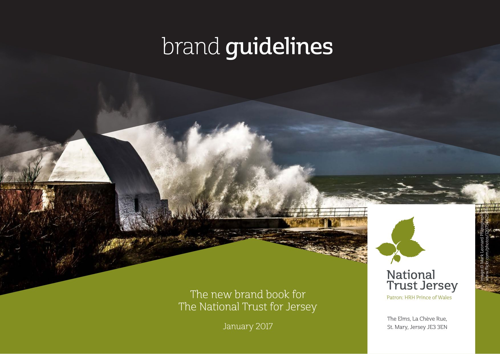
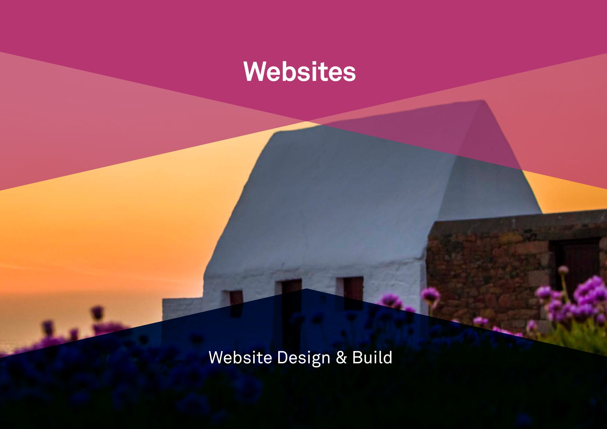
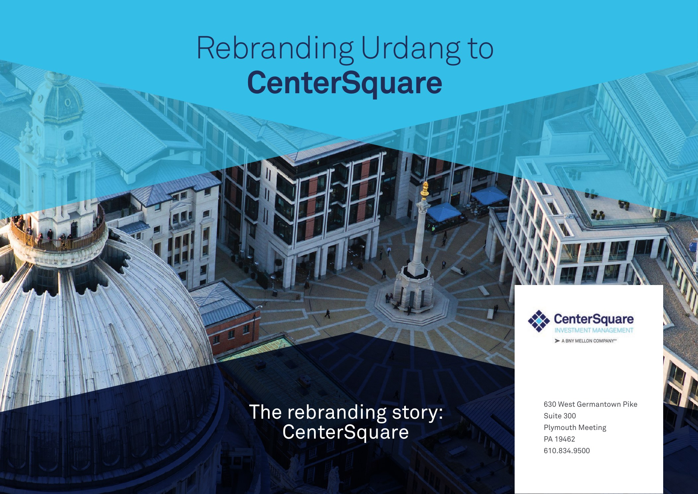
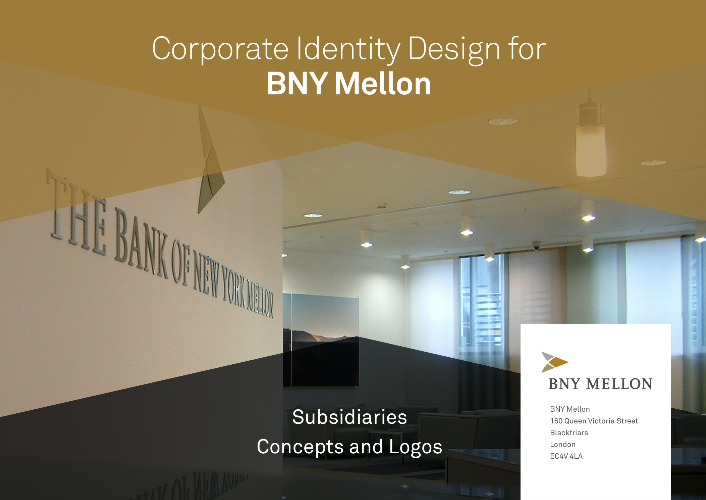
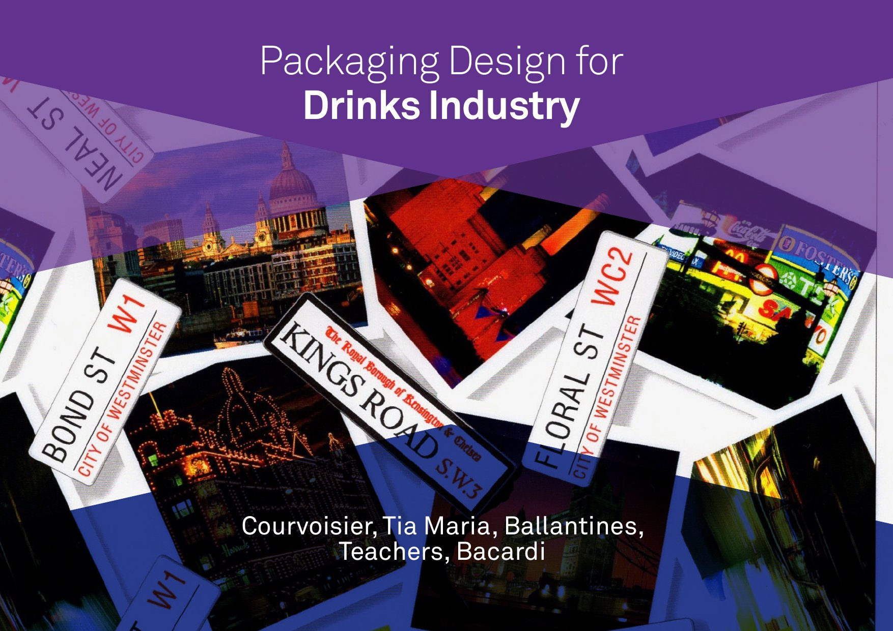

Design
Brand, print & digital
Design work spanning brand identity, publications, exhibition, UX, and web. Each portfolio is presented as a document: click any cover to read it in spread view.
-

National Trust Jersey
Brand guidelines & identity system. First rebrand since 1936.
-

Website Design
Editorial and service design for web.
-

Centre Square
Brand and communications design.
-

CoID
Corporate identity and design direction.
-
The London Chorus
Identity, publications and marketing design.
-

Drinks Industry
Packaging, brand and print design.
-
UX & UI Design
User experience and interface design work.